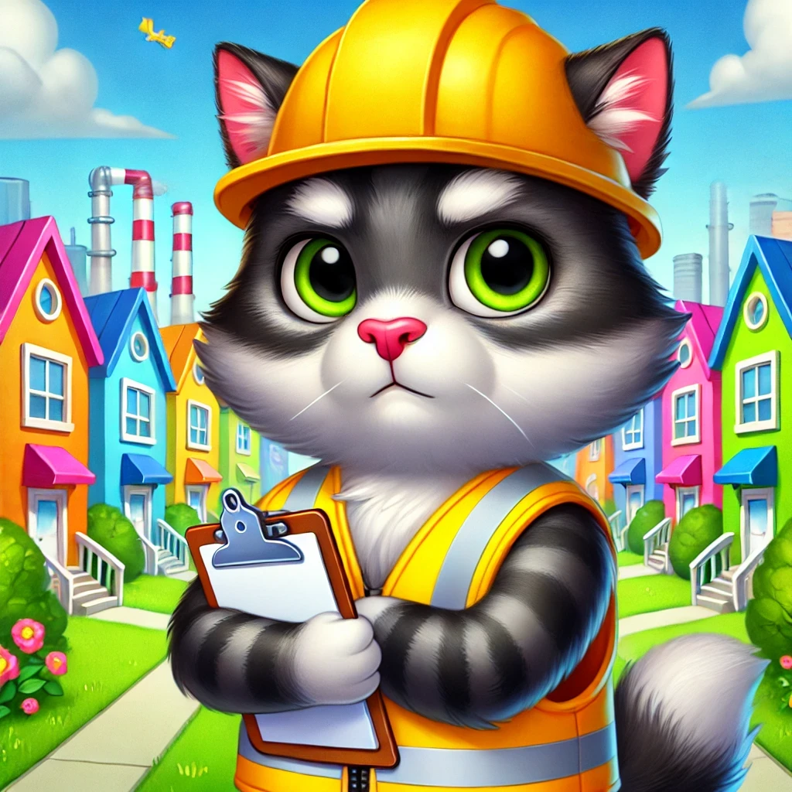

En un tranquilo vecindario, un gato llamado "Don Gato" se ha ganado la fama de ser el supervisor más estricto de una obra en construcción. Este felino, conocido por su impecable bigote y su porte serio, pasa sus días recorriendo la obra, observando cada movimiento de los trabajadores y asegurándose de que todo esté en orden.
Los trabajadores, inicialmente sorprendidos por su actitud, aseguran que "Don Gato" tiene un talento especial para detectar cualquier problema. "Es increíble. Si dejamos algo fuera de lugar o hacemos ruido innecesario, él simplemente se sienta frente a nosotros y nos mira fijamente. Sabemos que nos está juzgando", comentó entre risas uno de los albañiles.
Además de su rol como supervisor, "Don Gato" ha inspirado a los vecinos, quienes ahora lo alimentan con suculentas comidas y lo han nombrado oficialmente como la mascota del vecindario. "Nunca pensé que necesitaríamos un inspector tan peludo, pero ahora no podríamos trabajar sin él", declaró el jefe de la obra.
Según los rumores, "Don Gato" también ha solicitado un casco diminuto y un chaleco reflectante, pero hasta el momento, sus demandas no han sido cumplidas. A pesar de eso, el pequeño supervisor sigue comprometido con su labor, demostrando que incluso en el mundo de la construcción, siempre es bueno tener un gato vigilando.